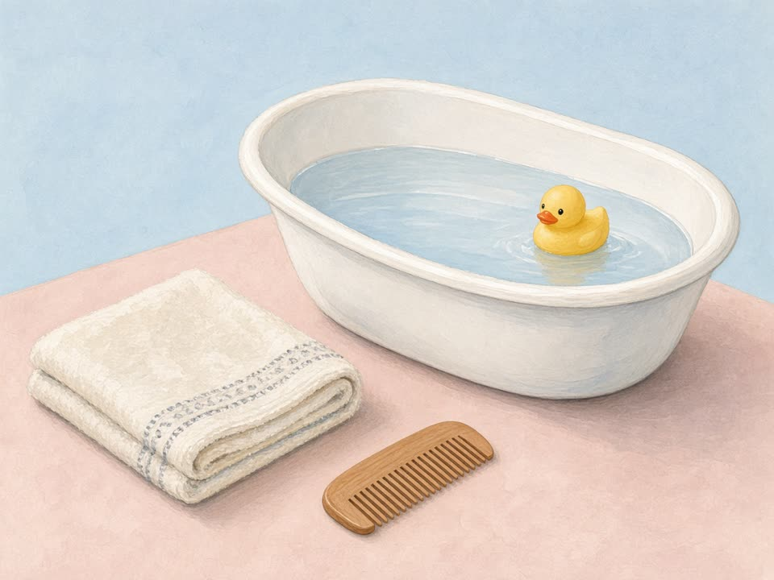
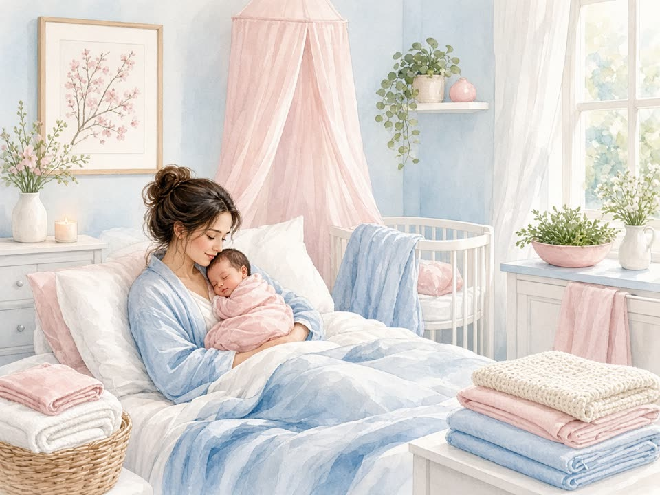
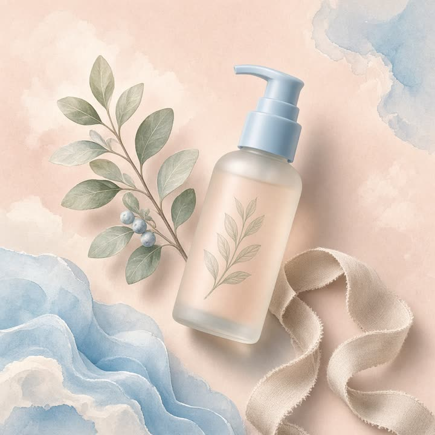
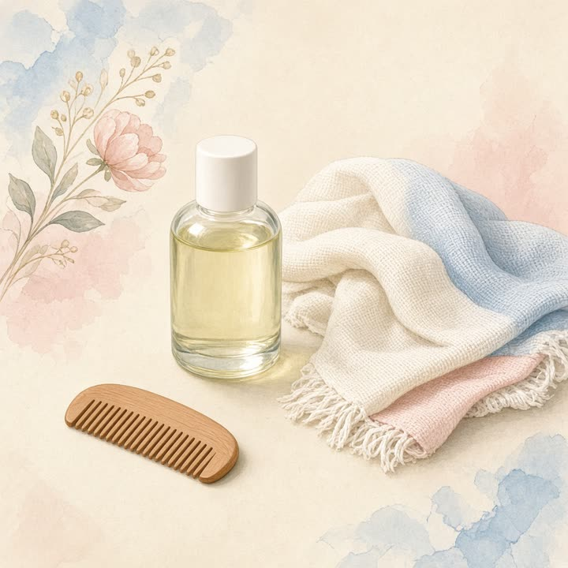
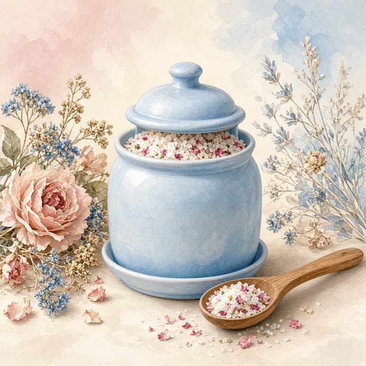

Thanh Lan Spa
Chăm mẹ và bé trước và sau sinh
Ms. Tô Lan và đội ngũ đồng hành cùng mẹ bầu, mẹ sau sinh và bé. Cơ sở có mặt tại 4 chi nhánh Bệnh viện Đa khoa Xuyên Á.
Sứ mệnh
Đồng hành chăm sóc và nâng đỡ người mẹ từ gốc rễ, để ươm mầm thế hệ tương lai khỏe mạnh, trí tuệ và nhân ái.
Tầm nhìn
Trở thành hệ sinh thái chăm sóc - giáo dục mẹ và bé hàng đầu Việt Nam, tiên phong nâng tầm người mẹ, góp phần kiến tạo một thế hệ tương lai ưu tú.
Giá trị cốt lõi
Chăm sóc bằng cả trái tim: thấu hiểu, yêu thương và đặt lợi ích của mẹ và bé làm trọng tâm trong mọi hành động.
Lấy an toàn làm nền tảng: kiên định với tiêu chuẩn chuyên môn, an toàn và chất lượng trong từng dịch vụ.
Trao tri thức, tạo giá trị: không ngừng học hỏi, chia sẻ kiến thức và nâng cao năng lực của người mẹ trên hành trình nuôi dưỡng thế hệ tương lai.
Giữ trọn niềm tin: trung thực, minh bạch, trách nhiệm và nhất quán giữa lời nói với hành động.
Cùng mẹ kiến tạo tương lai: gắn bó, thấu hiểu và hỗ trợ người mẹ, trẻ em và gia đình trong những giai đoạn quan trọng của cuộc sống.
Vươn xa vì thế hệ mai sau: không ngừng đổi mới và phát triển để tạo ra những giá trị bền vững cho gia đình, cộng đồng và xã hội.
Thanh Lan đồng hành

Dịch vụ cho bé
Chọn một thẻ để đọc nội dung buổi chăm. Bảng giá nằm ở cuối trang dịch vụ.
Dịch vụ cho mẹ
Mỗi dịch vụ một trang. Giá của gói được ghi ở phần dưới trang đó.



Sản phẩm nổi bật
Sản phẩm mẹ và bé đang có tại cửa hàng.


